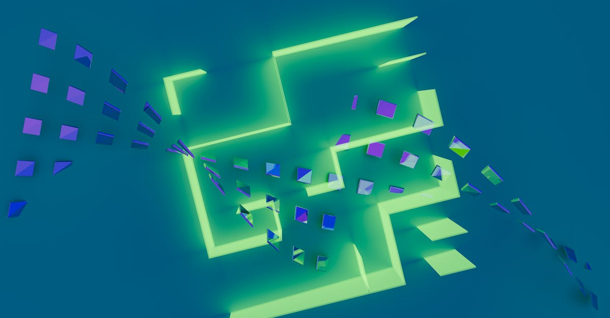

L'Ombre Quantique sur Bitcoin : Une Menace Réelle ?
L'émergence de l'informatique quantique représente un défi sans précédent pour la sécurité des systèmes cryptographiques actuels, et le Bitcoin, pilier de l'écosystème des cryptomonnaies, n'échappe pas à cette règle. Récemment, Charles Hoskinson, fondateur de Cardano et figure respectée de l'industrie, a publiquement exprimé ses doutes quant à l'efficacité des solutions proposées pour sécuriser Bitcoin contre les futures attaques quantiques. Selon lui, la défense envisagée par les développeurs de Bitcoin serait techniquement mal nommée et fonctionnellement inadéquate. Cette mise en garde soulève des questions cruciales quant à la pérennité de la valeur stockée sur la blockchain Bitcoin et à la confiance des investisseurs. L'enjeu est d'autant plus grand que l'on estime qu'environ 1,7 million de Bitcoins pourraient être vulnérables, quelle que soit la décision votée par la communauté. Cette situation met en lumière la complexité de l'adaptation des technologies matures face aux avancées disruptives, un défi particulièrement pertinent pour les stratégies de trading automatisé basées sur l'IA, qui nécessitent une fiabilité et une sécurité sans faille des actifs sous-jacents. La course à la sécurisation des données et des fonds face à la puissance de calcul quantique est lancée, et le Bitcoin est en première ligne.
👉 À lire : Bitcoin : Cap sur 90 000 $ grâce aux baleines

La Critique de Hoskinson : Pourquoi la Défense Quantique de Bitcoin Est-elle Contestée ?
Charles Hoskinson, connu pour son approche rigoureuse en matière de cryptographie et de développement blockchain avec Cardano, a pointé du doigt les failles potentielles de la stratégie de Bitcoin face à l'informatique quantique. Sa critique principale porte sur la nature même des algorithmes envisagés. Il soutient que la transition vers des algorithmes dits post-quantiques ou résistants au quantique n'est pas une simple mise à jour, mais une refonte profonde qui doit être menée avec une extrême prudence. Hoskinson suggère que les propositions actuelles pourraient être insuffisantes pour contrer une attaque quantique suffisamment puissante, notamment celles basées sur l'algorithme de Shor, capable de casser la cryptographie à clé publique utilisée par Bitcoin (comme ECDSA) beaucoup plus rapidement qu'avec les ordinateurs classiques. La distinction qu'il fait entre une défense quantique et une atténuation quantique est significative. Il semble craindre que les développeurs de Bitcoin ne proposent que des mesures palliatives, plutôt qu'une véritable transition vers une sécurité quantique robuste. Cette divergence d'opinion entre des acteurs majeurs de l'industrie souligne le manque de consensus sur la meilleure voie à suivre et l'urgence de trouver des solutions éprouvées. Pour les traders utilisant des agents IA, comprendre ces vulnérabilités potentielles est essentiel pour évaluer le risque systémique et ajuster leurs stratégies en conséquence, en privilégiant potentiellement des actifs ou des plateformes perçues comme plus résilientes.
👉 À lire : Bitcoin Tente un Retour : Résistance Clé en Vue
Le Sort Incertain de 1,7 Million de Bitcoins : Une Vulnérabilité Majeure ?
Le chiffre avancé par Hoskinson – 1,7 million de Bitcoins potentiellement irrécupérables – est le cœur de la préoccupation. Comment une telle quantité de la première cryptomonnaie pourrait-elle être compromise ? La vulnérabilité ne réside pas nécessairement dans la blockchain elle-même, mais dans la manière dont les clés privées sont gérées et sécurisées. Les algorithmes quantiques, une fois suffisamment développés, pourraient permettre de déduire une clé privée à partir d'une clé publique. Or, dans le protocole Bitcoin, les clés publiques sont souvent révélées avant que les fonds ne soient dépensés (lors de la transaction sortante). Un attaquant quantique disposant des ressources nécessaires pourrait potentiellement intercepter cette clé publique, calculer la clé privée correspondante, et ainsi voler les fonds associés avant que la transaction ne soit confirmée. Cette fenêtre d'opportunité, bien que théorique aujourd'hui, devient une menace concrète avec l'avancement de l'informatique quantique. La communauté Bitcoin est consciente de ce risque, et des discussions sont en cours pour implémenter des mises à jour de sécurité. Cependant, le processus de consensus sur Bitcoin est notoirement lent et complexe. La crainte est que la communauté ne parvienne pas à un accord ou à une implémentation suffisamment rapide pour contrer la menace avant qu'elle ne devienne réalité. Pour les investisseurs et les traders, cela implique une analyse de risque accrue sur la détention de BTC, surtout à long terme, et une vigilance constante quant aux développements technologiques et communautaires.
L'Impact sur le Prix du Bitcoin : Entre Spéculation et Réalité Technologique
La déclaration de Charles Hoskinson, relayée par de nombreux médias spécialisés, a inévitablement alimenté les spéculations sur le prix futur du Bitcoin. Bien que le marché des cryptomonnaies soit souvent influencé par les annonces et les personnalités, il est crucial de distinguer la perception du risque de la réalité technique imminente. Actuellement, les ordinateurs quantiques capables de casser la cryptographie de Bitcoin n'existent pas encore. Les experts estiment que cela pourrait prendre encore de nombreuses années, voire une décennie ou plus. Cependant, la préparation est la clé. Les détenteurs de Bitcoin et les acteurs du marché doivent anticiper ce risque. Si la peur d'une vulnérabilité quantique venait à s'installer durablement, elle pourrait exercer une pression baissière sur le prix du Bitcoin, indépendamment des autres facteurs macroéconomiques ou technologiques. À l'inverse, une solution de sécurité post-quantique robuste et consensuelle pourrait renforcer la confiance et potentiellement soutenir le prix. Pour les agents IA de trading crypto, cette incertitude représente un défi majeur. Ces systèmes s'appuient sur des données historiques et des modèles prédictifs pour optimiser les stratégies. L'arrivée potentielle d'une menace existentielle comme l'informatique quantique rend les prédictions à long terme plus complexes. Les algorithmes doivent être capables d'intégrer cette nouvelle dimension de risque, peut-être en ajustant les allocations, en diversifiant les portefeuilles vers des actifs moins exposés, ou en intégrant des indicateurs de sentiment liés à la sécurité quantique.
Cardano et la Sécurité Post-Quantique : Une Approche Différente ?
La critique de Hoskinson envers Bitcoin n'est pas seulement une observation, mais aussi le reflet de la philosophie de développement de Cardano. Cardano a toujours mis l'accent sur la recherche académique, la rigueur scientifique et la préparation proactive face aux défis futurs, y compris la menace quantique. L'équipe de Cardano travaille activement sur des solutions de cryptographie post-quantique, en collaboration avec des institutions de recherche renommées. Contrairement à Bitcoin, dont l'architecture est plus ancienne et dont le processus de mise à jour est décentralisé et potentiellement lent, Cardano, en tant que plateforme plus récente et davantage contrôlée par son équipe de développement, pourrait avoir plus de flexibilité pour intégrer des changements cryptographiques majeurs. Hoskinson semble vouloir souligner que la meilleure défense n'est pas de réagir à la menace, mais de l'anticiper et de construire des systèmes résilients dès le départ. Cette approche, bien que potentiellement plus lente au déploiement initial, pourrait offrir une sécurité à plus long terme. Pour les investisseurs et les traders, notamment ceux qui utilisent des outils d'IA pour le trading, la comparaison entre les approches de sécurité de Bitcoin et de Cardano est instructive. Elle met en évidence la diversité des stratégies de développement blockchain et les compromis inhérents à chaque modèle. La question se pose : quelle approche garantira le mieux la pérennité et la sécurité des actifs numériques dans un avenir où la puissance de calcul quantique deviendra une réalité ?

L'IA et le Trading Crypto à l'Ère Quantique : Anticiper le Changement
L'avènement de l'informatique quantique, bien qu'encore lointain pour des applications de piratage à grande échelle, impose une réflexion stratégique profonde aux acteurs du trading de cryptomonnaies, en particulier ceux qui s'appuient sur des agents IA. Ces systèmes sophistiqués analysent d'énormes volumes de données pour identifier des opportunités de trading et exécuter des transactions avec une rapidité et une précision inégalées. Cependant, leur efficacité repose sur la stabilité et la prédictibilité des marchés et des technologies sous-jacentes. La menace quantique introduit une nouvelle variable d'incertitude majeure. Comment un agent IA peut-il intégrer ce risque ? Plusieurs pistes sont envisageables :
- Surveillance accrue des vulnérabilités : Les algorithmes pourraient être entraînés à surveiller activement les discussions techniques, les annonces de recherche et les développements liés à la cryptographie post-quantique et à l'informatique quantique.
- Modélisation du risque quantique : Développer des modèles capables d'estimer la probabilité et l'impact potentiel d'une attaque quantique sur différents actifs, et d'ajuster les paramètres de risque en conséquence.
- Diversification stratégique : L'IA pourrait recommander une diversification accrue vers des actifs ou des protocoles jugés plus résistants aux menaces quantiques, ou vers des solutions de stockage sécurisées.
- Stratégies de trading adaptatives : Les agents IA pourraient ajuster dynamiquement leurs stratégies, par exemple en réduisant l'exposition aux actifs les plus vulnérables ou en privilégiant des horizons de temps plus courts lorsque le risque perçu augmente.
La déclaration de Hoskinson, loin d'être une simple anecdote technique, est un signal d'alarme. Elle rappelle que l'innovation technologique, même dans des domaines comme l'IA et la blockchain, doit constamment anticiper les menaces futures. L'industrie crypto, et particulièrement le trading algorithmique, devra faire preuve d'une grande agilité pour naviguer dans cette transition potentiellement disruptive.
Conclusion : Naviguer dans l'Incertitude avec Intelligence
La controverse soulevée par Charles Hoskinson concernant la sécurité quantique de Bitcoin met en lumière une vulnérabilité potentielle qui, bien qu'encore théorique, ne peut être ignorée. La perspective que 1,7 million de Bitcoins soient menacés est un rappel brutal que même les technologies les plus établies doivent évoluer pour survivre. Si Bitcoin opte pour des solutions hâtives ou insuffisantes, la confiance des investisseurs pourrait être ébranlée, affectant potentiellement son prix et son statut de réserve de valeur numérique. Cette situation souligne l'importance cruciale de la recherche continue et du développement rigoureux dans le domaine de la cryptographie. Pour les plateformes comme Cardano, qui mettent l'accent sur la résilience à long terme, c'est peut-être une opportunité de démontrer la supériorité de leur approche. Pour l'ensemble de l'écosystème crypto, et en particulier pour les adeptes du trading assisté par IA, l'heure est à la vigilance et à l'adaptation. Les agents IA de trading, tels que ceux promus par CryptoMind AI, qui fonctionnent 24h/24 et 7j/7, devront intégrer ces nouvelles données de risque dans leurs algorithmes. La capacité à anticiper, à analyser et à réagir à des menaces émergentes comme l'informatique quantique sera déterminante pour la performance et la sécurité des investissements dans les années à venir. L'avenir du Bitcoin, et peut-être de l'ensemble des cryptomonnaies, dépendra de sa capacité à relever ce défi technologique majeur avec intelligence et prévoyance.